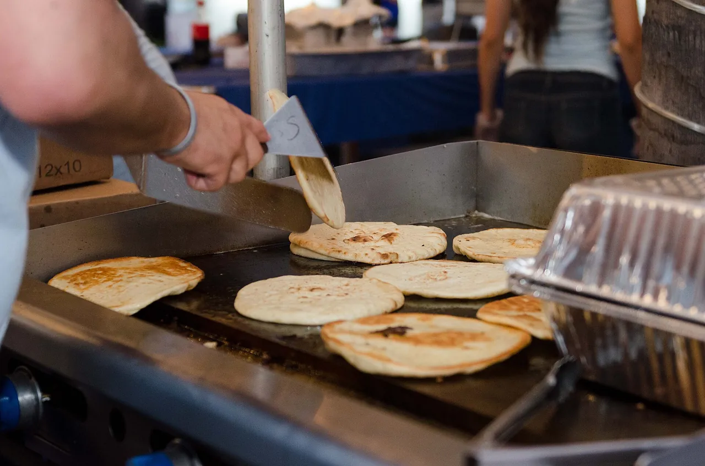
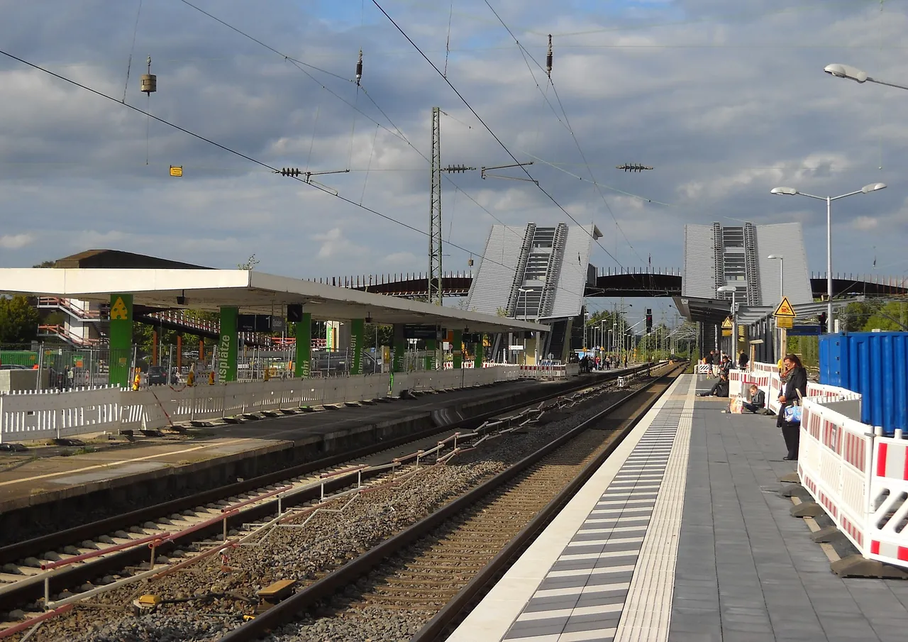
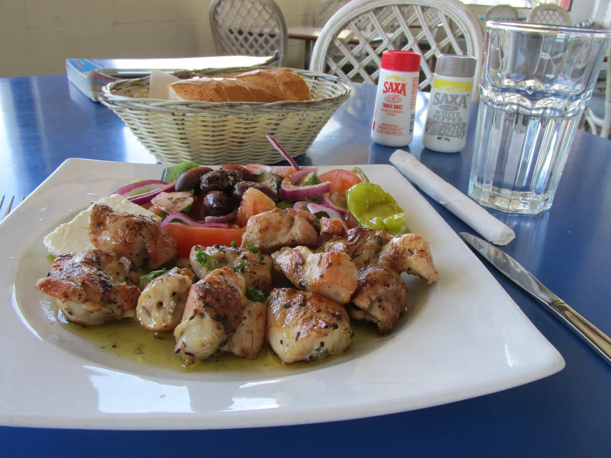

Griechischer Grill am Bahnhof Opladen
Gyros, Pizza und Kölsch vom Fass, Mo–Sa ab 11:30. Biergarten ab 17 Uhr.
Anfahrt und Öffnungszeiten
Öffnungszeiten
Leverkusen-Opladen 02171 80154
- Mo–Sa
- 11:30–21:00
- So
- Ruhetag
- BiergartenMo–Sa 17:00–22:00
- AnreiseVom Bahnhof Opladen über die Bahnhofsbrücke

Gyros, Pizza und Schnitzel
Tzatziki und Krautsalat sind hausgemacht. Ganze Karte
Vom Spieß
- Gyros Pita
Krautsalat, Zwiebeln, Tzatziki
- Gyros Komplett
Pommes, Tzatziki, Krautsalat
- Gyros überbacken
mit Feta und Metaxasauce
- Calamaris
mit Salat und Tzatziki
Aus Ofen und Pfanne
- Pizza Gyros Spezial
Gyros, Feta, Peperoni
- Pizza Kalimera
Spinat, Feta, Knoblauch
- Schnitzel Wiener Art
mit Pommes frites
- Currywurst
mit Pommes frites

Biergarten unter der Markise
Montag bis Samstag von 17 bis 22 Uhr sitzen Sie bei uns draußen, auf dem Rasen oder unter dem Sonnendach. Gyros, Pizza und frisch gezapftes Kölsch kommen an den Tisch.
Früher hieß das Haus „Zur Schwelle“, nebenan lief noch das Bahnwerk. Der Patron sitzt abends oft selbst im Garten und erzählt gern, wie es damals war.

Fußball und Dart an der Theke
An Spieltagen läuft bei uns Fußball, und wenn Bayer 04 spielt, wird es voll. Kölsch und Pils kommen frisch vom Fass.
Zwischen den Spielen fliegen die Dartpfeile. Größere Runden melden sich am besten vorher telefonisch.